How I thinkThree group trips, four travellers, and what I made of them — Discover & Define.
ii
How the idea grewFrom the traditional travel agent to a conversational, map-led planner — Develop.
iii
What I builtA working, map-led travel-planning prototype — Deliver.
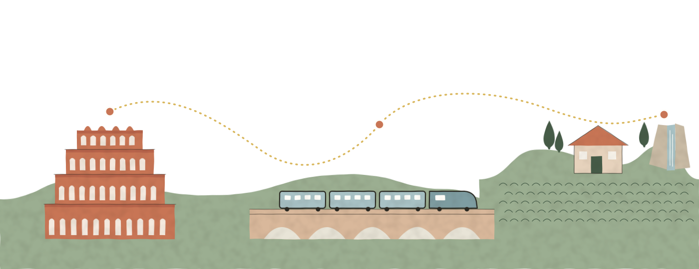
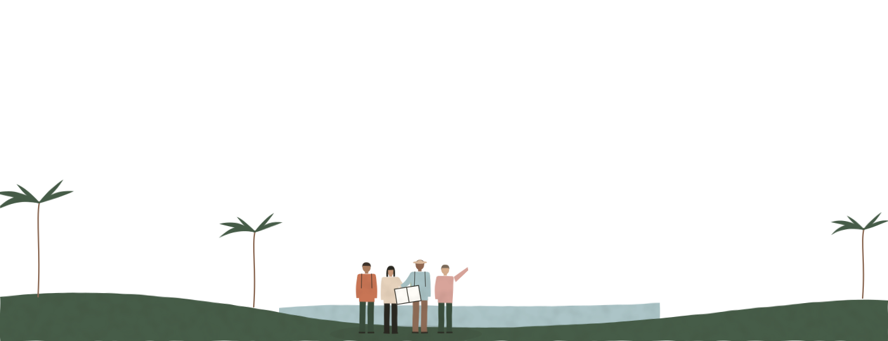
where the research began — group trips like Delhi → Jaipur
a group, a map, too many tabs
where the prototype goes — a weekend in Coorg
Authorship
Human-led, AI-assisted.
The project direction and design decisions were mine: how I read the challenge, the four-persona comparison, the research, the travel-agent inspiration, the hybrid concept and the map-led interface. AI enhanced selected parts of my exploration and implementation.
Stage
My contribution
AI's contribution
Discover
Interpreted the challenge; compared the four personas and chose two; gathered and analysed three group-trip accounts; chose the platform
Not used to set the direction
Define
Interpreted the research; framed the problem, the How Might We and the principles
Helped organise my notes and check the patterns I saw against other readings
Develop
The travel-agent inspiration; chose the hybrid concept and the map-led interface
Widened the brainstorm: rival directions, interaction options, edge cases
Deliver
Directed the experience and every design decision
Generated and debugged the HTML, CSS and JavaScript; interaction logic, sample data and microcopy refinement
01 — Discover
Understanding the problem
Why does a trip take so much assembling, and for whom is it hardest?
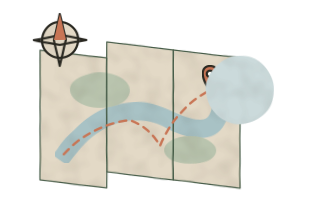
The starting point
Planning a trip has become a trip in itself.
Before anyone packs a bag, they have already travelled across a dozen tabs: one to find a destination, others to research what's worth seeing, compare trains and buses, find a stay and read its reviews, work out how far everything is from everything else — and a group chat to get everyone to agree.
Destinationsearch, reels, friends
Things to doblogs & tips
Transportbooking sites
Stayseveral platforms
Reviewsratings & photos
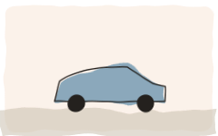
Distancesmaps & guesswork
The groupcalls & chats
Each piece is easy to find. Putting them together is the hard part.
The information exists; what's missing is the connection between it. A train time chosen on one site changes which stay makes sense on the next, and a stay on the edge of town changes what can fit into a day. The traveller is the only one holding the whole picture. I wanted to explore whether planning could feel more connected, more guided and more manageable.
How I read the challenge
Not "where should I go?" but "how do I make this trip work?"
The challenge was to design an AI-assisted way to plan a multi-day trip through conversation instead of search and filters. I read it as a question about feasibility before it is a question about recommendation.
Suggesting a destination is the easy part — any list of weekend getaways does that. What travellers struggle with is developing a trip that fits their circumstances: the days they have, the money they can spend, the people coming along and what each of them wants from it.
So I set out to investigate how planning could move beyond independent searching and booking, towards an experience that helps travellers understand what they need, explore options that genuinely suit them, and bring the parts of a trip together into one plan they can still change.
Four questions I carried through the project
AExpressing intent
How can people say what kind of trip they want — and how can the planner clarify without it feeling like a form?
BExplaining the plan
How does the planner show what it considered, and why it recommends something?
CStaying in control
How can people swap pieces and override suggestions without starting over?
DWhen things don't fit
What happens when budget, dates or availability can't all be met — or plans change?
Each question returns in Develop, where it becomes a set of experience decisions.
Four travellers
Four archetypes, four kinds of constraint
The challenge named four traveller archetypes. Before deciding whom to design for, I wanted to see how their constraints differ — who is short of time, who is short of money, who has the most people to satisfy — so that narrowing the focus would be a reasoned choice rather than a default. The levels are my reading of each description: hypotheses, not measurements.
secondaryA
Weekend Escaper
24–30 · short trips, tight budget, fixed dates
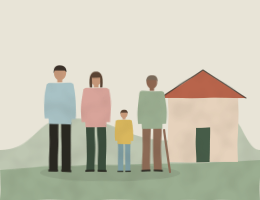
B
Family Trip Planner
32–42 · children and elders, needs certaintyprimaryC
Group Coordinator
25–35 · 4–8 friends, different budgets and dates
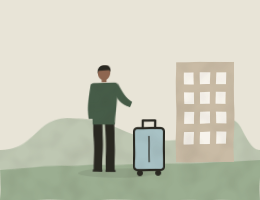
D
Business + Leisure
30–45 · fixed work days, time-poor
Planning constraints for the four traveller archetypes — my qualitative reading, not measurements.
Constraint
A · Weekend
B · Family
C · Group
D · Business
Who's travelling
Individual
A family, with children and elders
4–8 friends
Individual, around work
Time pressure
Budget sensitivity
Coordination effort
Preferences to balance
Schedule flexibility
Need for certainty
Planning complexity
Read across, the matrix shows different kinds of pressure. The Group Coordinator peaks on coordination, preferences and complexity; the Weekend Escaper on time and budget. Families need certainty above all, and business travellers are short of time but less bound by budget.
Narrowing the focus
The friend who plans, and the weekend escape
I chose to design for two of the four. The Group Coordinator carries the challenge of bringing several people with different budgets, preferences and expectations to one plan. The Weekend Escaper carries the challenge of making a trip work inside a short window and a tight budget. They are also the travel patterns I know best — those of my own age group, where friends live in different cities, with different budgets, dates and travel styles.
Primary persona
The Group Coordinator
Gets six friends to agree on one trip — and carries the planning load.
Goals
A place that works for everyone
Agreement without endless back-and-forth
Not be solely responsible
Constraints
Different budgets and dates
Different styles and energy
Unequal willingness to compromise
Needs
Preferences in one place
Trade-offs explained
Shared and optional activities
Opportunity
A shared base plan with optional choices that adapts when someone changes their mind
Secondary persona
The Weekend Escaper
Wants the best possible weekend within a fixed window and a tight budget.
Goals
Make a short break count
Stay within budget
Be back for work
Constraints
Fixed dates, little time
Limited disposable income
Flexible on where
Needs
Places that fit time and money
A compact plan
A clear total cost
Opportunity
Start from time and budget — let the destination be an output, not an input
One problem is collective, the other individual — but both need help turning many considerations into one feasible plan. What differs is the constraint that dominates: people for the coordinator, time and money for the escaper. Designing for both pushed me towards one planning system that can flex between them, rather than two separate products.
Families and business travellers are not the focus of this project; I return to that gap in the limits.
Three group trips
What three group trips showed me about planning
To ground the problem in real experience, I looked closely at three trips taken by groups of friends — one short and spontaneous, two during college holidays. Comparing them let me see what changes when time is tight, and what stays hard even when it isn't. No names or personal details are recorded.
Account 1 · Delhi → Jaipur
A short, spontaneous group trip: the group had about three days free and wanted somewhere affordable, within a feasible travelling distance.
Planning meant comparing transport, stays, activities, prices and reviews across several platforms. Budgets, preferences and interest in activities differed, so the group had to compromise — prioritising which places to see, and settling on options that were affordable but still reliable. Real account
The group had about three days free.
A video call to decide where to go.
Explored nearby places — no destination yet.
Chose Jaipur.
Asked people who knew the city.
Booked trains before any itinerary.
Searched several platforms for a stay.
Compared ratings, photos, prices, distance.
Settled on a middle-ground stay.
On the trip, some explored while others rested.
Orange stops mark the friction described in the account.
What I noted from this trip
A trip can begin with time, not a destination.They knew when they were free, not where to go.
The hard part is connecting information, not finding it.Search, several booking sites, reviews, photos and local tips.
Ratings and photos don't automatically earn trust.Reliability and accuracy were still questioned.
Distance decides feasibility.Places were dropped once distance was considered.
Groups compromise.Budgets differed; the stay was a middle ground.
Group plans can flex.Some explored while others rested and rejoined later.
Assistance is welcome — control is not negotiable.Recommendations with alternatives; the traveller decides.
The Jaipur trip pointed to three needs I kept returning to: recommendations flexible enough to compromise around, information people can trust, and a plan that can still be edited.
A group of friends travelling during a college holiday. Time was not the pressure — the holiday gave them room. The harder parts were aligning budgets and coordinating everyone into one plan.
Bangalore → Kannur
Another group of friends, also during a college holiday and also without significant time pressure. Again, the challenge was aligning budgets and reaching agreement between different people.
The three trips side by side
Comparison of the three group-trip accounts
Trip
Planning context
Main constraints
What it taught me
Delhi → Jaipur
Short, spontaneous group trip
Limited time, affordability, comparing options and coordinating preferences
Planning needs to account for feasibility, budget and different preferences
Bangalore → Ooty
Group of friends travelling during college holidays
Budget alignment and coordinating people
More available time does not automatically make group planning easier
Bangalore → Kannur
Group of friends travelling during college holidays
Budget alignment and coordinating people
Shared decisions require compromise and consideration of different preferences
JOK
What these accounts can and can't tell me. Three accounts is a small sample, and all three are trips by groups of friends. They show where planning gets hard; they don't measure how common these problems are. Families and business travellers aren't represented, and the level of detail varies — the Jaipur account is the most complete.
Synthesis
What I learned from these group trips
Some findings come from a single trip; others appear in all three. I've marked where each one comes from, and where I'm interpreting rather than reporting.
Time and budget are different constraints.Jaipur showed how hard it is to fit a trip into a short window and keep it affordable. Ooty and Kannur showed that even when time is available, aligning budgets remains difficult.JaipurOotyKannur
Group consensus is part of the planning problem.Planning for several people means accounting for different budgets, interests and expectations. In Jaipur it ended in a middle-ground stay; in Ooty and Kannur, coordinating people was one of the main challenges.JaipurOotyKannur
More options can increase decision-making effort.In Jaipur, comparing ratings, photos, prices and distance across several platforms made planning fragmented and slow. More choice did not make the decision easier.Jaipur
Flexibility matters.The Jaipur group compromised, dropped places once distance was considered and, on the trip itself, split up — some explored while others rested. Plans that can bend seem to serve groups better than one fixed itinerary.JaipurMy interpretation
A feasible itinerary must consider the group.Across the three trips, a plan only worked once it balanced individual preferences against what the group shared — budget, time and distance. Recommendations should help with that balance, not only match one person's taste.My interpretation, across all three
The group traveller is not simply looking for a destination. They are trying to make a shared trip work for people with different budgets, preferences and practical constraints.
Where it could live
Choosing a platform to design within
I wanted the concept to sit inside an existing travel ecosystem rather than float free of one. So I walked through Cleartrip and MakeMyTrip from my own use, looking at how far each supports planning a whole trip rather than booking its parts. This was an exploratory walkthrough, not a usability audit.
Cleartrip
Context
Booking and package discovery
What I saw
Packages seemed oriented around flights + hotels
Opportunity
Connect the components and sightseeing
Fit
Possible
MakeMyTrip chosen
Context
Booking, holiday packages, expert assistance
What I saw
A route to human travel experts, and an AI recommendation feature — on my attempt, with a long wait for a reply
Opportunity
Make assisted planning immediate, conversational and editable
Fit
Closest to assisted, expert-led planning
Cleartrip's packages seemed built around flight-and-hotel combinations, leaving sightseeing and the rest of the trip to the traveller. MakeMyTrip already sells holidays, offers a route to human travel experts and has an AI recommendation feature, which made it the more relevant setting for AI-assisted planning. On my attempt, though, the AI reply took a long time to arrive — leaving room to make assisted planning faster, clearer and more useful. I chose MakeMyTrip as the context for this concept, alongside its booking ecosystem rather than replacing it. Provisional
Still to verify on the platforms
A systematic walkthrough of both, with dated screenshots
The exact steps to expert assistance and AI recommendations
Whether the slow AI reply I observed is repeatable (one attempt — not a general claim)
02 — Define
Framing the opportunity
What do the trips tell me, and what is worth designing for?
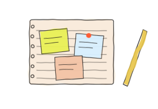
What I saw → what I understood
From three trips to one understanding
Discover reports what happened on each trip. Here I interpret it: what repeated, what differed, and what that means for a planning tool.
What I observed
JaipurLimited time and a tight budget; planning split across many platforms; places dropped once distance was considered; ratings and photos questioned.
OotyMore time, thanks to the college holiday — but budgets were hard to align across the group.
KannurAlso time to spare, with similar difficulty aligning budgets and getting everyone to agree.
Patterns that emerged
Constraints change with the kind of trip: time pressed hardest in Jaipur; budget mattered in all three.
Budget alignment can stay difficult even when time is available.
Group decisions require compromise.
Travellers need to compare and negotiate alternatives, not just receive one answer.
A useful itinerary has to account for shared feasibility, not one person's preferences.
What I understood
Group travel is a coordination problem as much as a destination-discovery problem.
The challenge is not only finding suitable places. It is helping people reach a shared decision — turning different preferences and constraints into a plan that actually works.
Interpreting the traveller
Two travellers, related but distinct needs
The Group Coordinator
Brings several people together to plan a shared experience. Has to account for different budgets, preferences, expectations and practical constraints — and usually carries the planning load for everyone.
The Weekend Escaper
Wants to make the most of a short window. Balances affordability, distance and what is feasible in the time available — and usually decides alone.
Both need help turning many considerations into one feasible plan. What differs is the constraint that dominates — people for one, time and money for the other. That overlap is what a single planning system has to serve.
Problem & question
The problem, in one sentence
Travellers planning a short trip — especially groups of friends — research destinations, transport, stays and activities in separate places, then have to reconcile them against limited time, different budgets and different preferences. The effort lies less in finding options than in turning them into one feasible plan everyone can agree on.
How might we…
How might we make planning a short trip feel guided rather than assembled — helping travellers move from scattered research and individual constraints to a feasible, flexible itinerary they can shape together?
Principles
Eight rules for every screen
I turned that understanding into principles to test every later decision against.
Start with traveller intent, not a long formPeople describe the trip they want in their own words; nothing is mandatory up front.
Clarify constraints progressivelyAsk for dates, budget and group size only when they are needed — and never twice.
Curate, don't overwhelmA few relevant options rather than a long list; in Jaipur, more choice meant more effort.
Explain why something fitsShort reasons and where the information comes from, so people can trust a pick — or question it.
Keep the itinerary editableAny piece can be replaced, removed or made optional without rebuilding the trip.
Make geography understandableShow where things are and how far apart, because distance decides what is feasible.
Offer alternatives when constraints conflictName the constraint that breaks and show ways forward, not a dead end.
Keep the traveller in controlThe planner proposes and explains; people review, change and approve.
Responsibilities
What AI handles, what the traveller controls
Keeping the traveller in control meant deciding early what the planner may do on its own — and what it must never do.
AI handles
The traveller controls
Interprets preferences from natural language
Corrects or confirms them
Spots missing information
Provides the important details
Explores feasible destinations
Chooses one
Builds and explains an itinerary
Reviews, edits, approves
Finds alternatives; names trade-offs
Decides which trade-off is acceptable
Updates what a change affects
Confirms significant changes
Book anything without explicit approval
Present simulated prices as live
Claim availability it hasn't verified
Invent reviews or local tips
Hide material trade-offs
Treat inferred preferences as facts
Force a group into identical activities
AI in Define
The interpretation stays mine
In this stage I used AI to help organise my notes from the trips and to check the patterns I was seeing against other possible readings. The interpretation, the problem framing, the How Might We question and the principles are my own.
"AI plans the trip" → "AI prepares a plan for review"
"One plan for everyone" → shared base + optional
"Explain everything" → concise reasons, evidence on demand
Rejected
Two separate products
A long questionnaire
A chatbot as the whole solution
Regenerating the trip after every edit
03 — Develop
Exploring and shaping the solution
How did an older way of planning trips become a new kind of planner?
The inspiration
What a good travel agent used to do
The trips kept pointing to the same gap: nobody was helping the traveller hold the pieces together. That made me think of the traditional travel agent — and it became the original inspiration for this project.
You walked in, explained the kind of trip you had in mind, and left with a curated plan — instead of researching every component yourself.
What interested me was not the booking but the relationship: someone knowledgeable listening, understanding your constraints, connecting transport, stay and local experiences, and then letting you discuss and reshape what they proposed. I wanted to translate that guided way of planning into a contemporary digital experience — to recreate the helpfulness of a travel agent, not build another search interface.
How assisted planning worked
The traveller describesthe kind of trip they want, in their own words.
The agent understandsthe requirements and the constraints behind them.
The agent curatestransport, accommodation and local experiences.
A proposal is presentedas one connected itinerary.
The traveller reviewsdiscusses it and asks for changes.
The trip evolvesthrough that back-and-forth until it fits.
Then, now — and what could come next
before
Assisted planning
Explain what you want
The agent clarifies and curates
Discuss, negotiate, approve
now
Self-service planning
Search each piece separately
Filter, compare, revisit
Assemble it all yourself
proposed
AI-assisted planning
Describe the trip in your words
AI connects and explains the pieces
You edit, choose and approve
The aim: bring back the feeling of being helped by a knowledgeable planner — listening, curating, explaining — with the speed and flexibility of a digital tool, and with the traveller still deciding.
What to keep from the human planner, what AI can improve
Keep
Listening and understanding context
Curating a few relevant options
Connecting transport, stay and local experiences
Explaining alternatives; letting the traveller negotiate
Improve
Speed; handling many constraints at once
Updating connected pieces after a change
Making alternatives easy to compare
Always available
Conceptual inspiration — not a claim that all travellers used agents, or that agents' roles were uniform.
How the concept evolved
From an inspiration to a concept
I didn't go straight from the travel-agent idea to a screen. I set it against genuinely different ways planning could work, so the final concept would be chosen rather than assumed.
Original inspirationThe travel agent: listen, curate, propose, revise.
Design explorationHow each part of that relationship could work digitally.
Concept directionsThree distinct models of planning, below.
Final conceptA hybrid of conversation and an editable, map-led itinerary.
Experience designThe decisions, states and flows that make it usable.
Three directions
01
Conversational Travel Companion
A conversational interface that helps travellers discover what they want through progressive questions and suggestions.
Good at
Natural entry
Discovery when unsure
Weak at
Comparing a complex trip
Details buried in chat
Retained in part conversational discovery — not a transcript as the product.
02
AI-Curated Trip Builder
Generates a complete itinerary from the traveller's preferences and constraints; the traveller then reviews each component.
Good at
The whole trip visible
Easy comparison
Weak at
Still search-first
Needs input upfront
Retained in part the structured itinerary as the main output.
03selected
Hybrid Travel Planner
Conversational discovery that leads into an AI-curated itinerary the traveller can keep editing — laid out on a map.
Good at
Discovery and comparison
Explainable, editable
Individual and group
Weak at
More to design and build
Chat and plan must stay in sync
Selected closest to the travel-agent relationship: talk first, then shape a concrete plan together.
How the three compared against my research and principles
Criterion
01
02
03
Discovery without a destination
strong
weak
strong
Clarify without a form
strong
weak
strong
See and compare the whole trip
weak
strong
strong
Swap pieces without starting over
partial
strong
strong
Explain with evidence
partial
partial
strong
Feasible to prototype in the time available
strong
strong
partial
Qualitative judgement, not a scored test.
Why the hybrid
Talk like a person, plan like a planner
Conversation alone is good for discovering what you want but poor for comparing a complex trip; a generated itinerary is easy to scan but asks for everything up front. The hybrid keeps what each does well, and it mirrors the travel-agent relationship — talk first, then shape a concrete proposal together. The final concept brings together:
Conversational discoveryDescribe the trip in your own words — no destination needed.
Progressive understanding of constraintsDates, budget and group size are clarified as they become relevant.
Destination recommendationsA few places that fit, each with its reasons.
An editable multi-day itineraryTransport, stay and days connected in one plan.
Map-led explorationWhere everything is, and how each day moves.
Alternatives and trade-offsOptions that show what changes, what stays and what it costs.
User controlSwap, compare, undo — the traveller approves every change.
Experience decisions
Designing the experience
The four questions from Discover became the main experience decisions, with a fifth that runs through all of them: control.
How does the planner understand a trip without a questionnaire?
Instead of a mandatory form, the traveller starts by describing what they have in mind. The planner reflects back what it understood, then clarifies only what is missing — travel dates and available time, budget, number of travellers, destination preferences, interests and anything else that limits the plan.
"I like places surrounded by greenery, small cafes, local food, walking around — nothing too hectic."
greenery→nature-led places
small cafes→independent cafes
local food→food exploration
walking around→walkable areas
not hectic→relaxed pace
Illustrative example.
"Sounds like a quieter hill town with scenic walks, local cafes and a relaxed pace. Shall I explore a few places that match?"
Decision. Open with intent; reflect preferences back as editable chips; ask for dates, group size and budget only when missing — one question at a time — and never re-ask. The summary describes this trip, not a personality label.
B
Curated recommendations
How does the planner connect the pieces, and say why?
Every recommendation arrives with its reasons. A short explanation of why something suits this traveller does more for confidence than more options — in Jaipur, ratings and photos without context weren't enough to earn trust.
RecommendedThe best match against known constraints — prominent.
AlternativeMeets most needs — fully readable, never greyed out.
Trade-offChanges one thing — cost, time or comfort — and says which.
Decision. Every stop carries two or three concise reasons (e.g. "within the stay budget · 12 min from Day 1 stops · matches 'quiet, green'"), a source status and a simulated cost. No long reasoning, no invented confidence scores. Loading shows what's actually happening, step by step.
C
An editable itinerary
How do people change one piece without rebuilding the trip?
Travellers can inspect, replace and modify individual components. A change touches only what it affects — the rest of the plan stays as it was.
"I don't want another waterfall on Day 2." Only the touched stop, its route segments and the budget change — the user sees the impact and confirms first.
Decision. Replace, remove or make optional at component level; show what changes, what stays, the budget and time impact; confirm; undo. For groups: shared anchors plus optional choices that meet at the same place — as in the Delhi–Jaipur trip, where some explored while others rested.
D
Alternatives & trade-offs
What happens when time, budget or availability can't all be met?
When the constraints can't all be accommodated, the planner says which one breaks and offers ways forward. The options echo the compromises the Jaipur group made — a middle-ground stay, and not everyone doing everything.
"That's ₹950 over your ₹7,000 budget. Pick a fix — nothing changes until you do."
Change the stayKeep the place and every activity; trade privacy for cost.
Optional as add-onsThose who join the pricier activity pay for it.
Raise the budget slightlyKeep everything as planned.
Constraint conflictThe system works; the requirements can't all be met.
Information unavailableA detail can't be confirmed.
Technical errorSomething failed to load.
Empty resultNothing in the data matches.
Decision. Never "No results found". Detect the type, keep the plan and inputs, name the cause in plain words, offer at least two options with what changes and what's kept, apply only on approval, allow undo.
E
User control
Who decides?
The planner guides and recommends; it never decides on the traveller's behalf and never books. Significant changes are previewed with their impact, applied only after confirmation and can be undone. Inferred preferences appear as editable chips, never as facts.
Detail on demand
Details when you want them
Hotel, transport and activity details shouldn't clutter the itinerary. In the prototype a stop opens in place — one reason first, the rest a tap away — by click, tap or keyboard; nothing is hover-only.
Why this stay
Within the stay budget
≈12 min to Day 1 stops (simulated)
Matches "quiet, green"
Source: unverified in prototype · Alternatives: town guesthouse, hostel dorm
Try it: hover, Tab to it, or tap.
Always on the card
Type · time · place · cost · status
On demand
Picture · why it's recommended · travel time to the next stop · source status · alternatives · replace
Ratings and review counts appear only if a verified source exists — none is connected in the prototype, so none is shown.
Map-led exploration
The itinerary is also a map
A list can't show that two places are an hour apart — and in Jaipur, distance was what ruled places out. So the map is not decoration. It sits at the centre of the planning view and shows where the recommended places are, how the itinerary connects geographically, which stops belong to each day, which activities are optional and how places relate to one another.
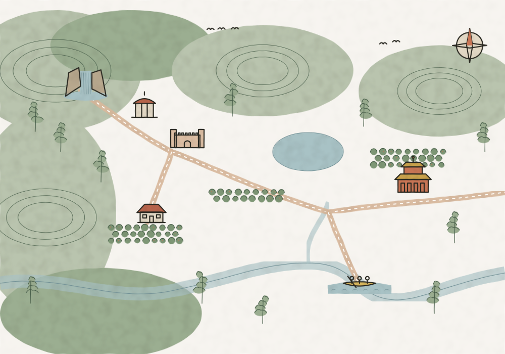
S1234124
Day 1 (orange) stays close to Madikeri; Day 2 (blue) travels east. Conceptual, not to scale.
One ID, two viewsPick a stop in the list → its marker lights up and the route leading to it thickens. Pick a marker → the list item highlights and details open.
Days by colour, number and shapeOrange Day 1, blue Day 2; circles for activities, squares for the stay, diamonds for transport. Dashed outlines are optional.
Near and far, at a glanceOne day at a time on the map; travel time between stops in the day plan; drives of 40 minutes or more flagged.
Honest about itselfConceptual, not to scale, times simulated. If it fails, the list still works.
Back to the research
How the trips shaped the design
Each part of the experience answers something I saw in the three trips.
From the research
What it meant for the design
Where it shows up
Time and distance decide feasibilityJaipur
A plan has to be checked against the days available and the distance between stops.
Route-aware days; travel time between stops; longer drives flagged.
Budgets are hard to alignJaipur · Ooty · Kannur
Budget is a shared constraint that shapes which options are offered — and the alternatives when it breaks.
Per-person estimate; a budget conflict with three ways forward; optional activities as personal add-ons.
Groups must reach agreementJaipur · Ooty · Kannur
Preferences need gathering and reflecting back before anything is planned.
Conversational discovery; editable preference chips; shared anchors plus optional choices.
Research is fragmentedJaipur
The pieces should arrive already connected.
One itinerary joining transport, stay, activities and budget, with the conversation beside it.
Plans need to flexJaipur
Any piece should be changeable without starting over.
Replace, remove or make optional at component level; undo.
Confidence needs reasonsJaipur
A recommendation is only useful if its basis is visible.
Two or three reasons on every stop; source status; details on demand.
Information architecture
How the planner is organised
Conversation and itinerary stay connected throughout — never two separate products. Expand or collapse any branch.
AI Travel Planner
Welcome
Start with an idea
Start with dates
Start with a destination
Open prompts
Interpretation
Confirm · edit · reject
Departure · dates
Travellers · budget
Group preferences
Must-haves
Recommended · alternatives
Why · journey time · budget fit
Compare · select
Transport · stay
Day-by-day plan
Illustrated map
Budget
Map ↔ list sync
Detail on demand
Replace · remove · optional
Undo
Budget · dates
Unavailable · unverified
Group disagreement
Plan · costs · caveats
Continue to booking options
The core user flow
StartDescribe the ideal tripAI interprets preferencesConfirm or editAI asks for what's missingAI suggests destinationsChoose oneAI builds the map-led itineraryExplore the map, open detailsChange a component?
yesAI shows the impactConfirm or keep
nocontinue
Constraints feasible?
noExplain → optionsChoose one
yescontinue
Final summaryApprove → booking options
AI in Develop
Exploring with AI, deciding myself
This is where AI was most useful to me as a thinking partner. It widened the brainstorm — rival directions, alternative interactions, edge cases I hadn't listed. The travel-agent inspiration, the concept direction and the final selection were mine: I weighed each option against the research and my principles, and decided.
Develop decision log — where each idea came from
Idea
Origin
Decision
Why
Open-ended prompts
My direction
Accepted
Natural discovery
Detailed form first
Conventional pattern, explored with AI
Rejected
Friction; assumes a destination
Fully conversational itinerary
Rival direction, generated with AI
Modified
Needs a structured plan to compare
AI finalises the trip
Extreme explored with AI
Rejected
The traveller must approve
Recommended + alternatives
Mine, from research; refined with AI
Accepted
Choice and trade-offs
Regenerate after every edit
Explored with AI
Rejected
Disruptive
Detail on demand
My proposal
Accepted
Readable plan, detail available
Shared + optional activities
Mine, from the Delhi–Jaipur trip
Accepted
Different preferences and energy
Map-led itinerary
My interface decision
Accepted
Distance and day grouping visible
"Explored with AI" means AI helped generate or stress-test an option before I decided.
Trade-off register
Decision
Why
Trade-off
Group Coordinator primary
Richer coordination problem
More interaction complexity; less family/business coverage
Hybrid conversation + itinerary
Discovery and comparison
Two views to keep in sync
Detail on demand
Readable itinerary
Essential info must stay visible
Illustrated map
Spatial understanding, anticipation
Not for navigation
Simulated data, no backend
Fits the time box
Can't validate live booking behaviour
Notes marked "reconstructed summary" describe explorations from my project notes. They summarise what was explored; they are not verbatim prompts.
04 — Deliver
The planner, working
How does the final solution work, and what would I improve next?
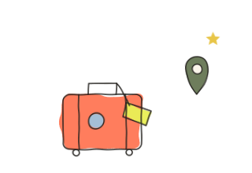
The product
Product overview
An AI-assisted, conversational and map-led travel planner inside MakeMyTrip, inspired by the traditional travel agent. It helps travellers move from describing an intention to exploring a curated, connected and editable trip — without having to assemble every component themselves.
ListensStarts from what you'd enjoy; reflects it back for correction; asks only for what's missing.
ConnectsTransport, stay, days, budget and distance as one plan on an illustrated map.
AdaptsSwap any piece and see the impact; conflicts come with options, not dead ends.
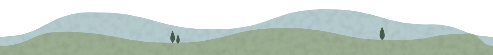
The prototype
Plan a weekend with six friends
Type your own trip or tap a suggestion. Everything — places, prices, times, availability and the AI's replies — is simulated in your browser. Nothing is booked or paid for.
Three steps: tell it your trip, explore the plan, review it. Tap any stop for details.
States lab
Conceptual map, not to scale and not for navigation · ratings are omitted because no verified source is connected · names marked "sample" are placeholders.
How it works
The experience, step by step
Seven steps, from an intention to a trip the traveller is happy with. Each one opens the prototype at that point, with the earlier steps filled in from the sample scenario.
ListenThe traveller describes the trip they have in mind, in their own words — no destination needed.
UnderstandWhat the planner understood builds up as editable notes; a missing detail — dates, travellers, budget — is asked once, one question at a time.
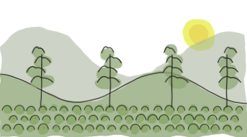
CurateOne best fit and two alternatives, each in a sentence — with a two-day plan joining transport, stay and activities.
ExplainEach stop opens in place with one reason; “Why this?” shows the rest, its source status and the simulated cost.
ExploreOne day at a time on an illustrated map, synced with the list beside it — optional stops dashed.
NegotiateSee what a swap costs before making it, and undo after; when the budget breaks, pick one of a few fixes.
DecideOne summary of the plan, costs and caveats, with one way back to edit. Nothing is booked.
Micro-interactions & states
When things load, fail, conflict or change
Every state keeps the plan and the traveller's inputs, says what is happening in plain words and offers a next step. All of them can be triggered from the states lab above the prototype.
Loading
Putting your trip together…
Getting there
A stay
Day-by-day plan
Cost per person
Staged, honest, cancellable — never a bare spinner.
Empty result
Nothing in the sample data matches that. That's an empty result, not an error.
Keep the green getaway
Different from an error — and always with a way on.
Technical error
Something went wrong on our side. Your plan is exactly as it was.
Try again
Calm, specific, nothing lost.
Budget conflict
That's ₹950 over your ₹7,000 budget. Pick a fix.
A cheaper stay₹6,800 ppPay for extras separately₹6,750 pp
Names the gap in one line, then a few fixes.
Successful update
Madikeri local food trail is in. Nothing else changed — about ₹8,300 each now.
Undo
Says what changed; the marker pulses; the budget re-counts.
Preview & undo
Madikeri local food trail+₹350 pp · ≈25 min less driving
Swap
The cost of a swap is shown before it; Undo after.
Every state, in the prototype's own words
Interaction states in the prototype and their microcopy
State
What the traveller sees
Microcopy
Understanding
A brief pause while the planner reads what was described; then the one missing detail, if any
"Reading that…" · "When are you free?"
Building the trip
Getting there, stay, day plan and cost ticked off one by one; cancellable
"Putting your trip together…"
Empty result
Says that nothing matched — different from an error — and offers a way on
"Nothing in the sample data matches that."
Technical error & recovery
Nothing the traveller entered is lost; one action to retry
"Something went wrong on our side. Your plan is exactly as it was."
Map failure
The day plan keeps working without the map
"The map didn't load. Your plan is still here in the list."
Budget conflict
Names the gap in one line, then up to three fixes; the cost drivers on request
"That's ₹950 over your ₹7,000 budget. Pick a fix."
Unavailable activity
Flagged on the stop; a similar option offered, the rest of the trip untouched
"Rafting isn't running on your dates."
Applying a change
A short pause while only the affected stop, route and cost update
"Updating your plan…"
Successful update
One line naming what changed; the marker pulses; the budget re-counts
"… is in. Nothing else changed."
Undo
Any change can be reversed from the planner's reply or the trip bar
"Undo" · "Back to how it was."
Every state runs on simulated data. Nothing in the prototype books, takes payment, or checks live prices or availability.
From concept to prototype
Building the prototype
I translated the concept into a working prototype of one complete journey — six friends planning a weekend in Coorg from Bangalore — with every place, price, time and reply simulated in the browser.
Implementation decisions
One journey, built end to endA single scenario with a swap and a budget conflict shows more than shallow versions of every persona would.
Scripted planner logicThe "AI" is scripted logic with simple keyword matching over sample data — enough to test the interaction, and honest about what it is.
One ID, two viewsMap markers and list stops share an ID, so selecting either highlights both and opens the same details.
A states labControls above the prototype that trigger each conflict, failure and empty state on demand.
Where AI helped in the build
Generated the codeHTML, CSS and JavaScript for the site and the prototype; the planner's scripted logic and simulated data.
Drew the illustrationsThe hand-painted SVGs were generated with a script to my visual reference.
Tested and debuggedAutomated browser runs through every tab and prototype step, on desktop and phone sizes.
Refined microcopyLoading, error and conflict messages, which I edited for honesty.
The sync the map-led direction depends on — specified by me, written with AI.
What worked, and what needed iteration
What worked
Syncing the map and the list put distance in front of the traveller without extra explanation.
Localised swaps kept the rest of the plan intact, so editing one piece never meant starting over.
Staged loaders made waiting legible — the planner says what it is doing.
From my own walkthroughs and automated runs — not from user testing.
What needed iteration
The map was too small at first, and its markers too large.
Pages scrolled sideways on phones; details were cramped.
A swap could silently push the plan over budget.
Map labels overlapped markers.
Iterations — the actual record
Iteration 1 · my requestBuild the documentation and prototype from my master document and visual guide
AI produced the first static site: four Double Diamond tabs, illustrations and the simulated planner.
Issues found in testing · fixedThe map was too small; markers looked oversized
The prototype was widened and the map pane rebuilt so it keeps its proportions.
Issues found in testing · fixedPages scrolled sideways on phones; details were cramped
Grid fixes for narrow screens; the detail panel became a bottom sheet on touch devices.
Issue found in testing · fixedSwapping the waterfall silently pushed the plan over budget
The change preview now warns before you confirm, and the planner offers ways to rebalance after.
Issues found in testing · fixedMap labels overlapped markers; a temple roof read like a cross
Labels repositioned; the monastery illustration was redrawn with a round finial.
Iteration 2 · my correctionsAnonymise the research; credit AI as a collaborator, not an author
The Delhi–Jaipur account was anonymised and the AI notes rewritten around my decisions.
Iteration 3 · my art directionMake it feel authored: Fraunces + Epilogue, an editorial travel journal, a map-led planner
The narrative was cut by about half, with detail moved into expandable sections; the map took about 62% of the planning area, with travel-time chips, dark long legs and a walkable-town cluster to show near and far.
Iteration 4 · my art directionA visual language closer to an illustrated travel journal
Stage colours drawn from the Double Diamond, painted washes behind illustrations, taped prints and hand-drawn rules — content and prototype unchanged.
Iteration 5 · my narrative revisionTell the project as my design story
The research rebuilt around three group-trip accounts, the travel-agent inspiration placed in Develop, and AI's role reduced to what it actually did.
Iteration 6 · my art directionRedesign the whole site after a new visual style reference
A dark, grainy editorial system with heavy Fraunces display type; the illustrations restyled with bold outlines and flat colour; illustrations on rounded colour panels. Content, structure and prototype logic unchanged.
Iteration 7 · my art directionRedesign as a hand-painted travel journal
Three new references — painted cut-paper illustration, a cream editorial layout and illustrated destination scenes. The site returns to a warm cream page with light Fraunces headlines and crayon marks; the illustrations are repainted as textured, opaque paper with brush outlines in an earthy palette; the prototype becomes a paper journal on a pale-yellow sheet. Content, structure and prototype logic unchanged.
Iteration 8 · my art directionRepaint everything in watercolour and gouache
A new primary reference: a hand-painted panorama of the journey. The illustrations are repainted with gouache texture and the reference's sampled colours; foliage loses its black outline; new painted clouds, sun, fronds, hills and a pinned route compose the cover, the stage openers and the prototype into continuous scenes instead of framed pictures. Content, structure and prototype logic unchanged.
Iteration 9 · my directionSimplify the planner to three stages
The prototype felt overwhelming: too much text, too many controls, five progress steps and several panels scrolling at once. It now has three stages — Tell us, Explore, Review — in one workspace with a single page scroll: one open prompt, missing details asked one at a time, one best fit and two alternatives, the map and day plan side by side with a Day 1 / Day 2 switch, and details that open in place. Every function stayed: map sync, swaps with undo, budget, conflicts, alternatives, the summary, and the loading, empty and error states.
Iteration 10 · my art directionFrom cartoonish to an illustrated travel editorial
Six art-direction boards replaced the watercolour direction, which had become too cartoonish. The figures were redrawn with restrained, realistic proportions; every illustration became flat, muted pigment with lines fixed at 2.2 px and 1.2 px; the hero and stage openers were rebuilt as layered scenes with gentle parallax; and a small motion vocabulary was added — underlines that draw in, markers that settle, details that open in place, a route that draws while the trip is built, a checkmark when a change is saved. Content, structure and prototype logic unchanged.
The testing above was automated, run by AI in a headless browser. My own hands-on review is still to do before submission.
Limits & next steps
What isn't built — and what I'd do next
Honest limits
Not a booking system; no live prices or availability
The research is three group-trip accounts — a small sample, all groups of friends
Families and business travellers aren't represented in the research
No usability testing yet
Group coordination is represented, not multi-user
The AI is scripted logic with simple keyword matching
One journey and one destination with full sample data
Styled in this project's visual system, not MakeMyTrip's own components yet
Next, with more time
Talk to travellers beyond my peer group — families and business travellers especially
Usability-test the journey with 3–5 people
Let each friend add preferences; vote on options; per-person costs
Verified sources: ratings, reviews, live availability
Replan when weather, transport or plans change
Align with MakeMyTrip's components and hand off to booking
Validation plan — tasks and what to observe
Tasks
Start without a destination
Correct an inferred preference
Choose a destination
Find out why a stay was picked
Replace one activity; read the budget impact
Resolve a budget conflict
Say whether the final plan feels trustworthy
Observe
Do people understand what the AI is doing?
Can they find what matters?
Does the map help them judge distance?
Do they feel in control?
Do errors give a useful next step?
Data & trust rules the prototype follows
Every price is labelled simulated; availability is unverified
No invented ratings or review counts
Source labels describe where real data would come from
No booking, payment or confirmation number is ever implied
Interaction specifications A–H
Screen
What it must do
A
Conversational discovery
Natural-language input; preference summary to confirm, edit or reject
B
Contextual clarification
Only missing details, one at a time, with quick answers; nothing re-asked
C
Destinations
One best fit and two alternatives; a one-line reason, journey time and budget fit each
D
Itinerary
Day-by-day on the map; sequence and distance considered; costs labelled
E
Detail on demand
Opens in place by click, tap or keyboard; one reason first, then evidence, source status, alternatives
F
Localised change
Cost shown before the swap; untouched parts preserved; undo
G
Constraint conflict
Names the conflict; two or more options; user chooses
H
Final review
Plan, costs, caveats; one way back to edit; nothing booked
Design system — palette and type
Paper#F7F3EA · page
Panel#FFFDF8 · the planner, quiet panels
Scene#E8E4D7 · behind illustrations
Ink#292821 · text, primary lines
Sage#9BAE91 · terrain, Discover
Forest#465C48 · actions, eyebrows, foreground
Terracotta#C87555 · pins, highlights, Day 1, Deliver
Mustard#D9B75D · route, sun, Develop
Blue#A8C2C5 · water, far hills, AI notes, Define
Rose#D8A49A · small accents
Titles · FrauncesBring the pieces together
Body & UI · EpilogueNavigation, buttons, forms, captions, tables and the whole prototype.
The visual references
The current art direction comes from six specification boards in assets/references/. They are rules to build from, so they are described here rather than shown:
01 · Overall art directionAn illustrated travel editorial: editorial, illustrated, tactile, functional. No cartoon characters, thick outlines, stickers or loud gradients.
03 · Type, colour & layoutFraunces display, Epilogue body; the palette above; wide margins, an 8 px rhythm, quiet dividers; one strong editorial moment per section.
04 · Micro-interactionsUnderlines draw in, illustrations shift 3–5 px, markers settle, details open in place, a route draws while loading, a checkmark draws on save. 160–280 ms UI, 400–700 ms reveals, ease-out.
05 · Parallax layeringSky 0.15×, far hills 0.30×, midground 0.55×, foreground 0.80×; text and controls move with the page.
06 · Product UIEditorial, but usable: simple borders, open space, editorial type, conventional and accessible controls.
Earlier directions this project went through:
Watercolour and gouache journey panorama.
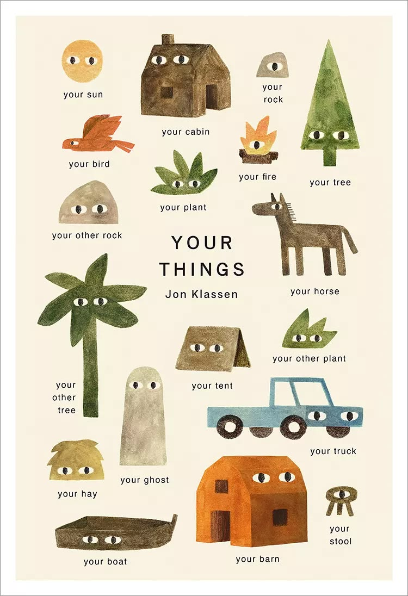
Painted, cut-paper shapes.
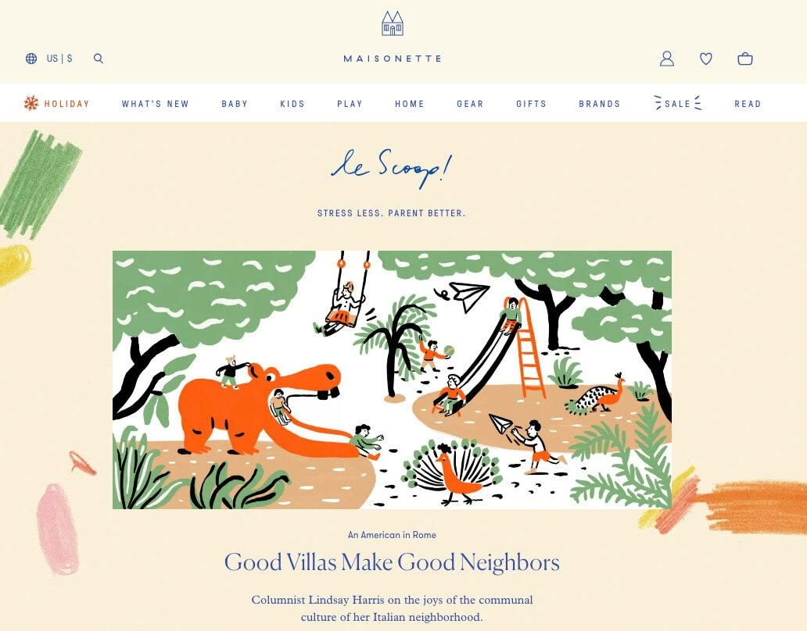
A cream editorial page.Destination scenes.
A dark editorial reference.The original Visual Guide.
12-hour time plan
Research1.5 h
Define1 h
Explore1.5 h
UX2 h
Prototype4 h
Presentation2 h
Open items — not to be fabricated
More detail on Ooty and KannurAdd only what the travellers themselves recall.
Platform evidenceDated screenshots of both walkthroughs.
The slow AI replyRecord the exact steps; repeat once before claiming more.
Hands-on reviewMy own pass over the AI-written code and copy.
Usability testEven 3 people, before calling anything validated.
AI prompt record 5 entries · actual prompts only
Only prompts actually used in this project, quoted from my own instructions. Elsewhere, the case study summarises AI's role rather than listing prompts.
Actual · this projectPreparing the HTML implementationCan the documentation and prototype be built as one coherent website?
1Design question
Can the documentation and prototype be built as one coherent website?
2Prompt
Read the Markdown file provided in detail and do as is needed for the documentation part as suggested. Do the tool part, along with the process as mentioned in detail. Follow the style guide that has been attached for visual reference, and follow the Markdown file. Give me the entire thing so we can preview this, and also give me the HTML code as mentioned in the Markdown file as required.
Actual prompt from this project's AI session (15 Nov 2026), quoted from the designer's own instructions.
3Possibilities explored
A static, multi-file site: four Double Diamond tabs, an illustrated visual system, and a simulated prototype with a linked map.
4Accepted
The structure, visual direction, map concept and prototype requirements — kept in the follow-up.
5Modified
How AI involvement was described: changed from AI-centred to collaboration; the research account anonymised.
6Rejected
Any framing where AI appears to have conceived the solution.
7Final decision
The first build. The AI-written code still needs the designer's own review before submission.
Actual · this projectCorrecting how AI is creditedDoes the documentation show who actually led the design?
1Design question
Does the documentation show who actually led the design?
2Prompt
Do not portray AI as having independently conceived the entire solution. The documentation should communicate that I was leading the design process, while AI supported exploration, critique, iteration and execution.
Actual prompt from this project's AI session (15 Nov 2026), quoted from the designer's own instructions.
3Possibilities explored
Ownership statements; reconstructed prompt logs; a reflection on AI's role.
4Accepted
A human-led, AI-assisted framing throughout.
5Modified
Every prompt is labelled actual, reconstructed or future.
6Rejected
Inventing exact historical prompts.
7Final decision
The ownership panel, these logs and the reflection section.
Actual · this projectArt-directing the refinementDoes the case study look and read like it was authored by a designer?
1Design question
Does the case study look and read like it was authored by a designer?
2Prompt
This is a refinement of my existing work, not a request to independently redesign or reinvent the entire concept. Preserve the central idea, design direction, research, decisions and interactions already established. Improve the visual execution, information hierarchy, storytelling and overall quality.
Actual prompt from this project's AI session (15 Nov 2026), quoted from the designer's own instructions.
3Possibilities explored
An editorial travel-journal layout; Fraunces and Epilogue only; fewer cards and pills; a map-led planning area; a narrative cut by roughly half with detail moved into expandable sections.
4Accepted
The designer's art direction as the brief for this round.
5Modified
AI translated it into layout, type and component decisions, and added distance cues to the map (travel-time chips, dark long legs, a walkable-town cluster).
6Rejected
Replacing the illustrations or the concept; adding fonts or libraries.
7Final decision
This refinement of the site. The concept, research and decisions are unchanged; the designer reviews the result.
Actual · this projectRedesigning the visual languageDoes the site look like an illustrated travel journal rather than a template?
1Design question
Does the site look like an illustrated travel journal rather than a template?
2Prompt
I want the website to feel like an illustrated travel journal combined with a contemporary editorial design portfolio.
Excerpt from my instructions in this project's AI session.
3Possibilities explored
Stage colours, painted washes, taped prints, hand-drawn rules and torn-paper bands, using only the existing illustrations.
4Accepted
One colour per stage, drawn from the Double Diamond; illustrations on washes.
5Modified
Fewer boxes and lighter shadows; cards kept only where they mark something specific.
6Rejected
New typefaces, stock imagery or changes to content and prototype behaviour.
7Final decision
The visual language of that round.
Actual · this projectRewriting the case study as my design storyDoes the case study tell my process, rather than respond to the challenge point by point?
1Design question
Does the case study tell my process, rather than respond to the challenge point by point?
2Prompt
The project direction and design decisions were mine. AI enhanced selected parts of my exploration and implementation.
Excerpt from my instructions in this project's AI session.
3Possibilities explored
Restructuring each stage around my interpretation; adding two further group-trip accounts; placing the travel-agent inspiration in Develop.
4Accepted
One story across the stages: Discover presents the research, Define interprets it, Develop evolves the concept, Deliver explains the product.
5Modified
AI's role reduced to what it actually did; reconstructed prompt logs removed.
6Rejected
Invented research details, quotations or platform claims.
7Final decision
The case study told as my design story.
Reflection
What I learned
The trips turned travel planning, for me, from a question of where to go into a question of how a group makes a trip work — and the travel agent showed me what helping with that could feel like.
About the problem
Time and budget behave differently — removing time pressure didn't remove the difficulty; budgets still had to be aligned.
Coordination is the real load — for groups, reaching a shared decision mattered as much as finding places.
Feasibility comes before preference — an appealing suggestion is no use if the days, distances or money don't work.
About designing and building
Prototyping exposed what diagrams hid — the over-budget swap only surfaced once the logic ran.
The map needed room — it only became useful once it took most of the planning area.
Honesty is a design material — labelling simulated data, unverified sources and the planner's limits shaped the interface as much as the layout did.
AI as a collaborator, not the author
The direction, the travel-agent inspiration, the research interpretation and the final design decisions were mine. AI enhanced selected parts of the work: it widened brainstorms in Develop, helped me organise and check my reading of the research, and generated and debugged most of the prototype's code under my direction. Where it fell short — filling gaps too confidently, drifting towards generic chatbot patterns, optimising for automation over control — I cut, rewrote or overruled it. Its code still needs my own review.
Closing
From searching for a trip to having a trip thoughtfully put together.
The aim isn't to make AI decide how people travel. It's to make planning less fragmented — so people can spend more time looking forward to the trip itself.
 Destinationsearch, reels, friends
Destinationsearch, reels, friends Things to doblogs & tips
Things to doblogs & tips Transportbooking sites
Transportbooking sites Stayseveral platforms
Stayseveral platforms Reviewsratings & photos
Reviewsratings & photos The groupcalls & chats
The groupcalls & chats